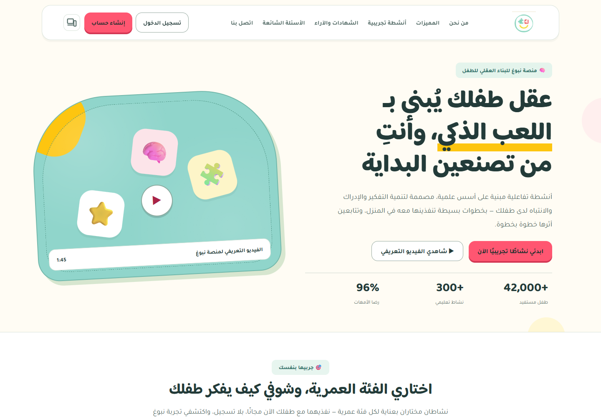
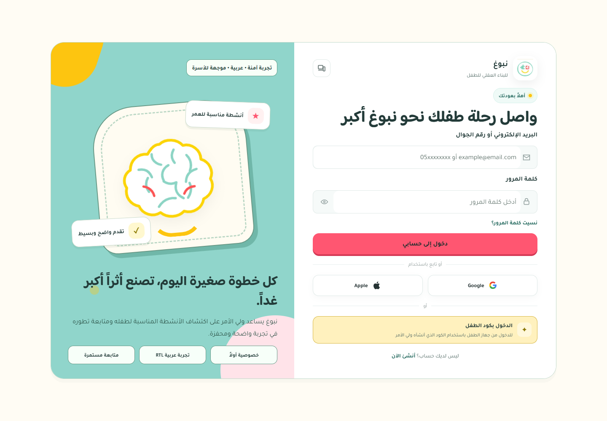
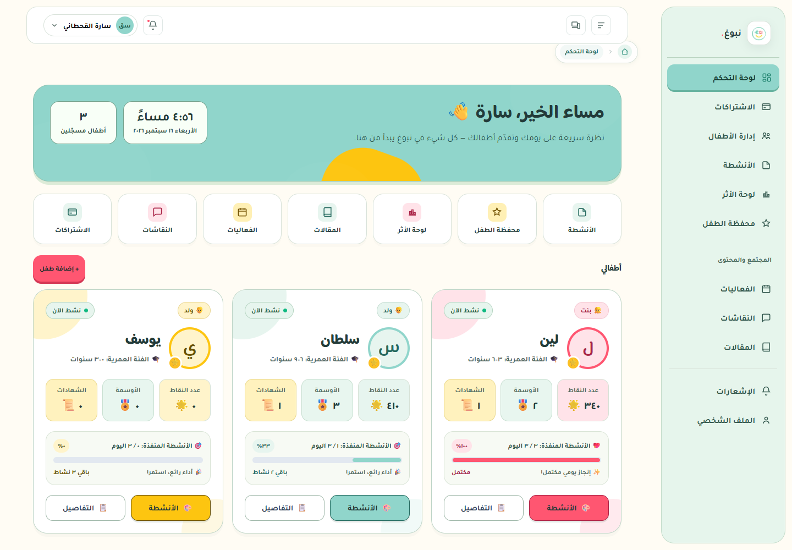
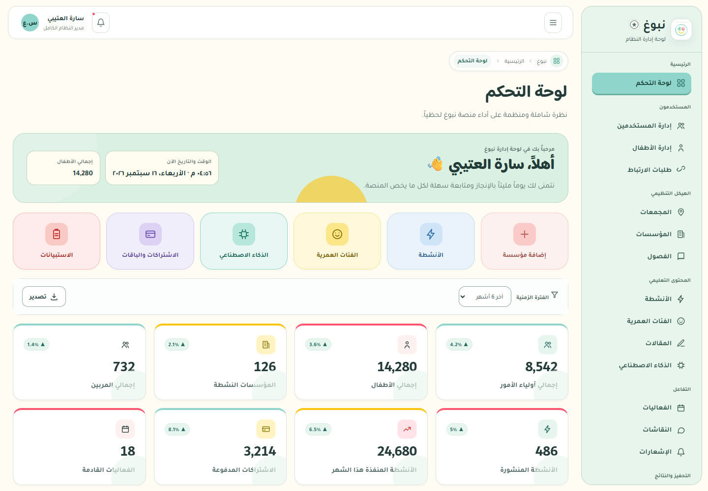

نبوغ، بروح أكثر مرحًا.
وقرب أكبر من الأم والطفل.
ثلاثة اتجاهات بصرية، وخمس شاشات تفاعلية في الاتجاه المقترح «حديقة الاكتشاف». ألوان مستخرجة من الموقع الفعلي، وتقييم موثّق للفريق التقني.
ثلاثة اتجاهات، بثلاث أفكار مختلفة

أ · حديقة الاكتشاف — المقترح
تكوين نعناعي، أصفر ووردي، ونشاط واضح في قلب التجربة. الأكثر توازنًا للأم والطفل.
افتحي النموذج ←
ب · دفتر اللحظات
بطاقات تحكي قصة ودفتر لحفظ الملاحظات؛ مناسب لإبراز العلاقة الأسرية والمحفظة.
افتحي النموذج ←
ج · جزر الاكتشاف
مسار قصير ومهام كبيرة، مناسب لمساحة الطفل أكثر من الصفحات الإدارية.
افتحي النموذج ←تجربة واحدة، وأدوار واضحة
صفحة الهبوط
وعد مفهوم، نشاط ملموس، ومساحة للأم والطفل.

التسجيل التدريجي
بداية قصيرة، ثم ملف طفل بالحد الأدنى من البيانات.

لوحة الأم
تبديل طفلين، نشاط اليوم، وتفسير التوصية.

تجربة الطفل
اختيار شكل، تشجيع، ثم اكتشاف خارج الشاشة.

لوحة الإدارة
بحث وترشيح ومراجعة حالة الطلب داخل المعاينة.
كيف تعرضين الحزمة على العميلة؟
ابدئي بمقارنة الاتجاهات، ثم افتحي لوحة الأم ومساحة الطفل، واختمي بأولويات التقرير. الصور في مجلد screens، والتقرير قابل للتعديل من report.html. النماذج لا تتصل بالمنصة ولا تنشئ حسابات حقيقية.